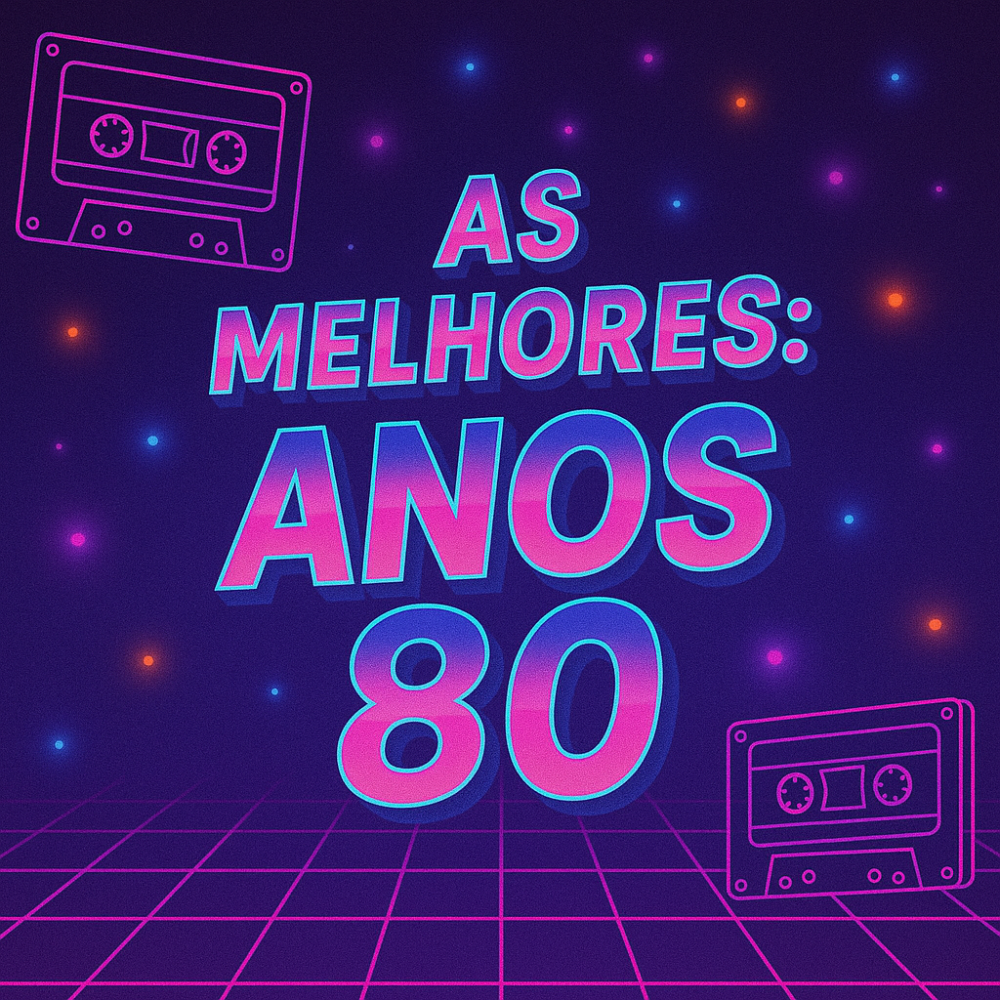
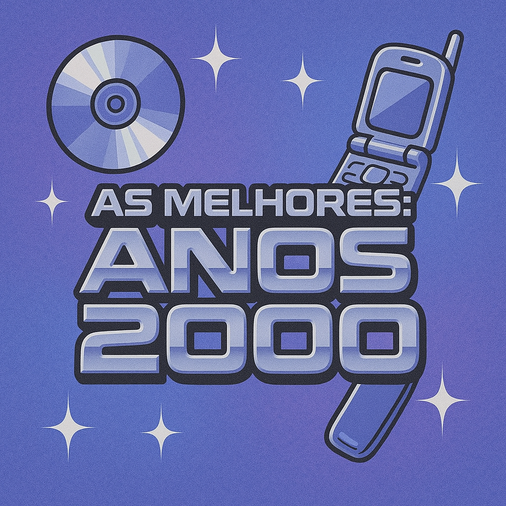
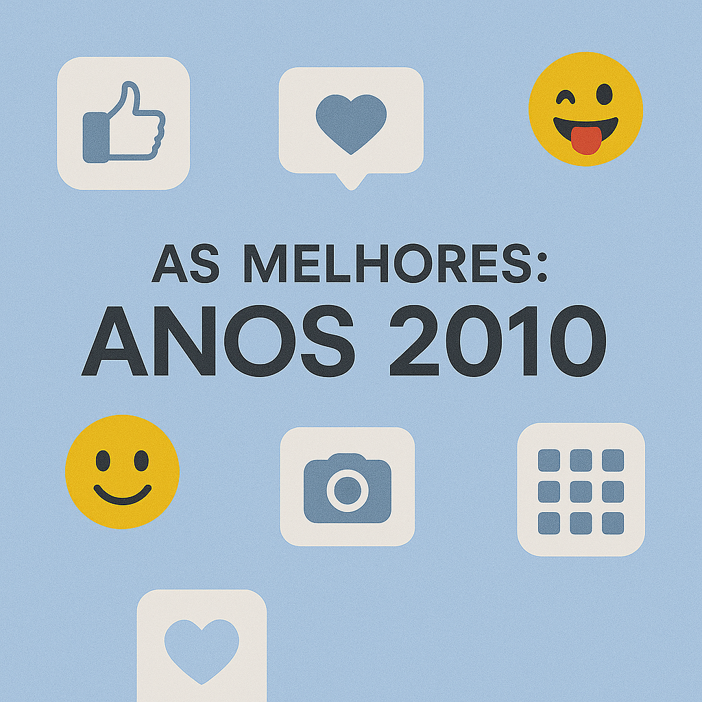
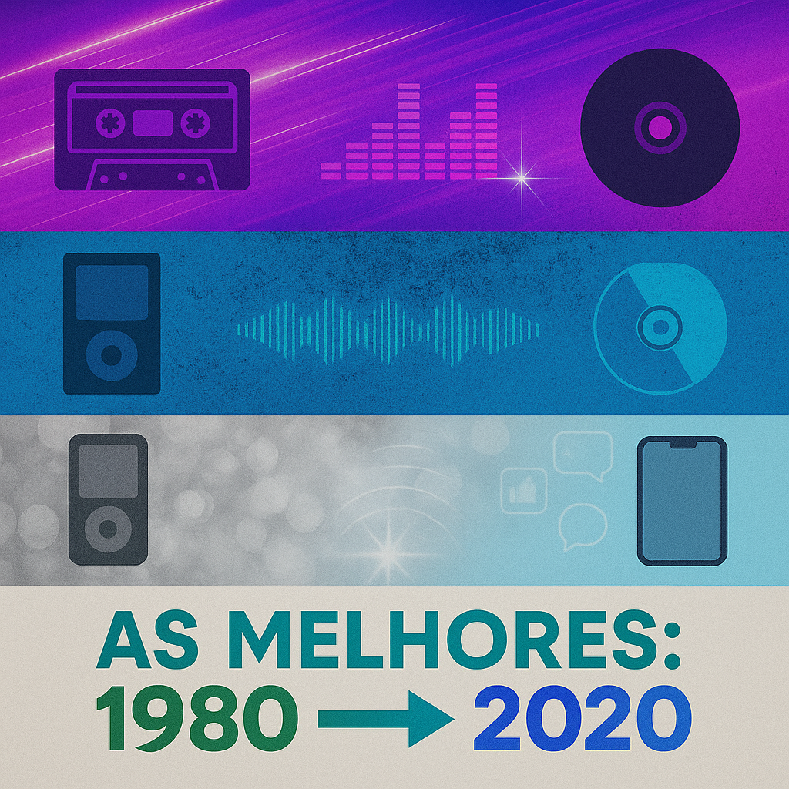

🎶 As Melhores de Todos os Tempos
Uma jornada musical pelos anos 80, 90, 2000, 2010 e 2020

As 100 Melhores Anos 80
Playlist • Luan Castro

As 100 Melhores Anos 90
Playlist • Luan Castro
As 100 Melhores Anos 2000
Playlist • Luan Castro

As 100 Melhores Anos 2010
Playlist • Luan Castro
As 100 Melhores Anos 2020
Playlist • Luan Castro

As 500 Melhores de Todos os Tempos
Playlist • Luan Castro